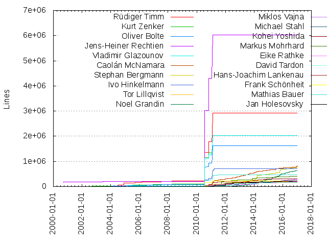
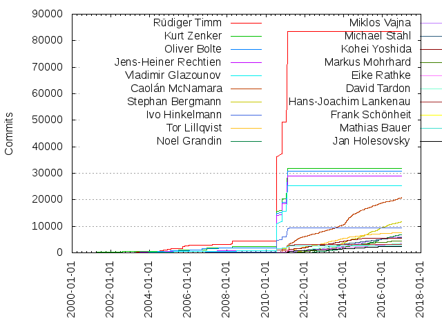

Authors
| Author | Commits (%) | + lines | - lines | First commit | Last commit | Age | Active days | # by commits |
|---|
| Rüdiger Timm | 83544 (20.80%) | 2918750 | 3149084 | 2000-10-10 | 2009-10-09 | 3285 days, 20:47:42 | 972 | 1 |
| Kurt Zenker | 31935 (7.95%) | 2023865 | 716500 | 2000-09-25 | 2011-04-07 | 3846 days, 3:20:02 | 890 | 2 |
| Oliver Bolte | 30716 (7.65%) | 1622927 | 882392 | 2000-09-19 | 2009-12-01 | 3360 days, 11:39:46 | 583 | 3 |
| Jens-Heiner Rechtien | 28842 (7.18%) | 6017371 | 1570481 | 2000-09-18 | 2010-10-15 | 3678 days, 2:23:01 | 485 | 4 |
| Vladimir Glazounov | 25394 (6.32%) | 2029876 | 597084 | 2000-12-04 | 2009-10-26 | 3248 days, 3:12:46 | 828 | 5 |
| Caolán McNamara | 20822 (5.18%) | 829064 | 1059301 | 2000-10-10 | 2017-01-07 | 5932 days, 7:39:38 | 2357 | 6 |
| Stephan Bergmann | 11721 (2.92%) | 762297 | 1026273 | 2000-10-04 | 2017-01-07 | 5938 days, 4:58:27 | 1518 | 7 |
| Ivo Hinkelmann | 9512 (2.37%) | 702573 | 580415 | 2002-09-09 | 2011-04-06 | 3131 days, 1:31:42 | 258 | 8 |
| Tor Lillqvist | 7688 (1.91%) | 216787 | 358310 | 2010-03-23 | 2017-01-03 | 2477 days, 19:41:19 | 1471 | 9 |
| Noel Grandin | 6841 (1.70%) | 634800 | 829054 | 2011-12-13 | 2016-12-23 | 1837 days, 16:28:48 | 1031 | 10 |
| Miklos Vajna | 6118 (1.52%) | 291412 | 358329 | 2010-07-30 | 2017-01-07 | 2352 days, 22:35:17 | 1562 | 11 |
| Michael Stahl | 5731 (1.43%) | 201901 | 330103 | 2009-10-09 | 2017-01-07 | 2646 days, 12:21:41 | 1345 | 12 |
| Kohei Yoshida | 5459 (1.36%) | 301582 | 225152 | 2009-06-19 | 2016-12-21 | 2742 days, 2:38:15 | 1047 | 13 |
| Markus Mohrhard | 4551 (1.13%) | 408830 | 168858 | 2011-03-17 | 2017-01-06 | 2121 days, 11:20:30 | 1138 | 14 |
| Eike Rathke | 3560 (0.89%) | 201756 | 130268 | 2000-10-11 | 2017-01-07 | 5931 days, 6:11:12 | 1207 | 15 |
| David Tardon | 3421 (0.85%) | 166349 | 137969 | 2009-11-12 | 2017-01-02 | 2607 days, 18:13:02 | 958 | 16 |
| Hans-Joachim Lankenau | 3007 (0.75%) | 189315 | 962098 | 2000-09-19 | 2011-05-31 | 3905 days, 17:53:10 | 557 | 17 |
| Frank Schönheit | 2700 (0.67%) | 224690 | 77712 | 2000-09-19 | 2010-03-11 | 3459 days, 22:43:51 | 444 | 18 |
| Mathias Bauer | 2580 (0.64%) | 461929 | 474994 | 2000-09-20 | 2011-03-21 | 3834 days, 2:43:37 | 535 | 19 |
| Jan Holesovsky | 2407 (0.60%) | 220567 | 151998 | 2009-06-23 | 2017-01-05 | 2752 days, 4:46:22 | 792 | 20 |
These didn't make it to the top: Oliver Specht, Frank Schoenheit [fs], Michael Meeks, Ocke Janssen, Thomas Arnhold, Norbert Thiebaud, Bjoern Michaelsen, Julien Nabet, Christian Lippka, Andras Timar, Matúš Kukan, Tomaž Vajngerl, sb, Luboš Luňák, Fridrich Štrba, Niklas Nebel, Takeshi Abe, Sascha Ballach, Philipp Lohmann, Matteo Casalin, Thorsten Behrens, Pascal Junck, jp, Lionel Elie Mamane, Petr Mladek, Philipp Lohmann [pl], Daniel Rentz, Vladimir Glazunov, Cédric Bosdonnat, Noel Power, Chris Sherlock, Martin Gallwey, Malte Timmermann, Thomas Lange, Kai Ahrens, Andre Fischer, Carsten Driesner, Joachim Lingner, Zolnai Tamás, Peter Burow, Henning Brinkmann, Sven Jacobi, Sander Vesik, Armin Weiss, Joseph Powers, Release Engineers, Kai Sommerfeld, Michael Brauer, Joerg Skottke [jsk], Daniel Vogelheim, Rafael Dominguez, Armin Le Grand, Daniel Boelzle, Andreas Schlüns, Ocke Janssen [oj], Frank Meies, Thomas Benisch, Ingrid Halama, Maxim Monastirsky, Thomas Lange [tl], Christian Lohmaier, Xisco Fauli, Andreas Martens, Peter Foley, Andrzej J.R. Hunt, Juergen Schmidt, obo, Jörg Barfurth, Nils Fuhrmann, Björn Milcke, Andreas Bregas, Herbert Duerr, Stephan Schäfer, Mikhail Voitenko, Khaled Hosny, Yousuf Philips, Jörg Budischewski, Ivan Timofeev, Olivier Hallot, Martin Hollmichel, Samuel Mehrbrodt, Rene Engelhard, Mikhail Voytenko, Tino Rachui, Behrend Cornelius, gt, Zdeněk Crhonek, Patrick Luby, David Ostrovsky, Daniel Rentz [dr], Radek Doulik, Szymon Kłos, Dirk Völzke, August Sodora, Oliver Braun, th, Katarina Behrens, Adolfo Jayme Barrientos, Pierre-André Jacquod, Lars Langhans, Jochen Nitschke, Hennes Rohling, Matthias Huetsch [mhu], Oliver-Rainer Wittmann, Dieter Loeschky, Kay Ramme, László Németh, Andrzej Hunt, os, Andreas Bille, Muthu Subramanian, Jan-Marek Glogowski, Michael Hönnig, Ingo Schmidt, Arnaud Versini, Robert Nagy, Jacobo Aragunde Pérez, Marcos Paulo de Souza, Laurent Balland-Poirier, Stanislav Horacek, Christof Pintaske, Stephan Wunderlich, Philipp Riemer, Marco Cecchetti, Herbert Duerr [hdu], Chr. Rossmanith, Andrea Gelmini, Nigel Hawkins, sj, Gert Faller, Artur Dorda, Alexander Wilms, Winfried Donkers, Siqi LIU, Dirk Grobler, Tom Verbeek, Herbert Dürr, Justin Luth, Francois Tigeot, Gregor Hartmann, Giuseppe Castagno, Pranav Kant, Karl Hong, Artur Dryomov, rbuj, Tomas O'Connor, Oliver Düsterhoff, Gabor Kelemen, Ocke.Janssen, Philipp Weissenbacher, Christina Rossmanith, Jesús Corrius, haochen, Ariel Constenla-Haile, Duncan Foster, Katarina Machalkova, Matthias Huetsch, Sebastian Spaeth, Ingrid Halama [iha], ka, Douglas Mencken, tono, Henning Brinkmann[hbrinkm], I-Jui (Ray) Sung, Kalman Szalai - KAMI, Joren De Cuyper, Matthias Freund, Mike Kaganski, Louis-Francis Ratté-Boulianne, Martin Maher, Thomas Klausner, Bartosz Kosiorek, Robert Antoni Buj i Gelonch, Release Engineering, Laurent Godard, Helge Delfs [hde], Dirk Voelzke, Aidan Butler, Tomas Chvatal, Krisztian Pinter, Rishabh Kumar, Tim Retout, Henry Castro, Daniel Bankston, Albert Thuswaldner, arellano, Adam Co, Mihaela Kedikova, Javier Fernandez, npower Developer, Tobias Krause, Minh Ngo, Ricardo Montania, Korrawit Pruegsanusak, siqi, Ashod Nakashian, Muhammet Kara, Akshay Deep, hg, Eike Rathke [er], thb, Tobias Madl, Bustamam Harun, weigao, Thorsten Bosbach, Jean-Pierre Ledure, Mark Hung, Babak Mahbod, mfe, Riccardo Magliocchetti, Kevin Hunter, Antonio Fernandez, hb, Stefan Knorr (astron), Jelle van der Waa, Gene Anaya, Michael Weghorn, Pierre-Eric Pelloux-Prayer, Malte Timmermann [mt], shiming zhang, Gergo Mocsi, avy, Martin Hosken, yiming ju, Tamás Zolnai, Simon Steinbeiss, Christoph Neumann, matteocam, Marc Neumann [msc], hdu, Nikolai Pretzell, Niklas Johansson, Wolfram Garten [wg], Rob Snelders, Martin Kepplinger, Juergen Funk, Efe Gürkan YALAMAN, yangzhang, Will Thompson, Rachit Gupta, Matthew J. Francis, Faisal M. Al-Otaibi, Cao Cuong Ngo, jan iversen, Urs Fässler, Michaël Lefèvre, Marcel Metz, Emmanuel Gil Peyrot, Palenik Mihály, Jaskaran Singh, hongyu zhong, Lior Kaplan, Bertram Nolte, Alexandre Vicenzi, mingli, mb93783, Steffen Grund, Rosemary, Mihai Varga, Michael Mi, Gerd Weiss, Ptyl Dragon, Matus Kukan, Armin Theissen, Rohan Kumar, Luc Castermans, Susobhan Ghosh, Philippe Jung, Peter Jentsch, Oliver Craemer [oc], Mark Wielaard, J. Graeme Lingard, Daniel Robertson, Cyrille Moureaux, Tsutomu Uchino, Sébastien Le Ray, Joerg Skottke, Eilidh McAdam, Christian M. Heller, andreas_k, René Engelhard, Francisco Saito, neilm, minwang, markm, Siqi Liu, Kayo Hamid, oisin, Valentin Kettner, Dennis Francis, Regina Henschel, Jürgen Schmidt, Jennifer Liebel, Iain Billett, Christian Lippka ORACLE, Guillaume Poussel, Csikós Tamás, Łukasz Hryniuk, dechuang, Vinaya Mandke, Tobias Lippert, Radu Ioan, PriyankaGaikwad, Laurent Charrière, fredrikh, Wastack, Steve Yin, Santiago Martinez, Ruediger Timm, Rodolfo Ribeiro Gomes, François Tigeot, xukai, jan Iversen, Varun, Tomáš Chvátal, Muthu Subramanian K, Mark Page, Lars Oppermann, Andreas Mantke, tpf, pw, Vishv Brahmbhatt, Luke Deller, Fridrich Strba, va, fengzeng, Lubos Lunak, skotti, mulei, Manal Alhassoun, Kenneth Venken, Jakub Trzebiatowski, Isamu Mogi, Christoph Herzog, xinjiang, andreask, Wol, Vasily Melenchuk, Harri Pitkänen, Elton Chung, Damjan Jovanovic, tagezi, sushil_shinde, Pallavi Jadhav, John Marmion, Jack Leigh, abdulmajeed ahmed, Szabolcs Dezsi, Gökçen Eraslan, Gokul, Bryan Quigley, Aurimas Fišeras, Andres Gomez, wg111939, Ras-al-Ghul, Nicolas Christener, Maxime de Roucy, José Guilherme Vanz, Josh Heidenreich, Jorenz Paragas, Daniel Sikeler, sz, jailletc36, andreas kainz, Vort, Kevin Hendricks, Helge Delfs, Andrzej J. R. Hunt, Uray M. János, Tomofumi Yagi, Jens-Heiner Rechtien [hr], Arnold Dumas, Sören Möller, Robert Roth, Pedro Giffuni, Mohammed Abdul Azeem, Michael E. Bohn, Mario J. Rugiero, Lucas Baudin, Julien Chaffraix, Gulsah Kose, Felix Zhang, Christian Dywan, Baptiste Daroussin, Akash Jain, zhenyu yuan, tb121644, npcdoom, kerem, Ruslan Kabatsayev, Ken Foskey, Jian Fang Zhang, Jacek Wolszczak, Frédéric Wang, Stefan Knorr, Rohit Deshmukh, Júlio Hoffimann, Caol?n McNamara, YogeshBharate, Wu Yan, Tushar Bende, Petr Vorel, Michael Lefevre, Brad Sowden, Andy Holder, mm, Xiaofei Zhang, Sven Wehner, Marc-Andre Laverdiere, Cor Nouws, Andrew, khz, ghiggins, andreas_ka, Sarah Smith, Prashant Pandey, Oliver Craemer, Joel Madero, Jens Carl, Hanno Meyer-Thurow, Boris Dušek, Abdulelah Alarifi, serval, Robert Antoni Buj Gelonch, Richard PALO, Jian Hong Cheng, Francisco Adrián Sánchez, Chris, Amelia Wang, Alfonso Eusebio, Aleksas Pantechovskis, pjacquod, krishna keshav, dkenny, Thomas Benisch [tbe], Takeshi Kurosawa, Peilin, Niko Rönkkö, Maciej Rumianowski, Luke Dixon, Lei De Bin, Jordan Ayers, Jean-Noël Rouvignac, Florian Reuter, Chris Laplante, Anders Jonsson, tsahi glik, osnola, navin patidar, mst, melikeyurtoglu, Ravindra Vidhate, Povilas Kanapickas, Octavio Alvarez, Nikhil Walvekar, Luke Symes, Heena Gupta, Darragh Sherwin, Cosimo Cecchi, Catalin Iacob, Alexander Bergmann, Zsolt Bölöny, Zhe Wang, Yifan J, Tim Hardeck, Sun Ying, Ping Liao, Juan Picca, Bálint Dózsa, Björgvin Ragnarsson, Aron Budea, umeshkadam, slideon, ok, Prashant Shah, Muhammad Haggag, Mindy Liu, Mathias Hasselmann, Joost Eekhoorn, Eric Bachard, Alia Almusaireae, tymyjan, csaba, Wilhelm Pflueger, Wei Wei, Volker Ahrendt, Uwe Fischer, Tomas Hlavaty, Svante Schubert, Olivier R, Mariusz Dykierek, Jani Monoses, Gábor Stefanik, Greg Kroah-Hartman, Gergő Mocsi, nadith, kadertarlan, cdt, akki95, Sean Young, Rishabh, René Kjellerup, Phillip Sz, Peter Rabi, Mox Soini, Michael Jaumann, Maarten Bosmans, Laszlo Kovacs, Jung-uk Kim, Jonas Finnemann Jensen, Frank Schönheit [fs], Frank Peters, Enrico Weigelt, metux ITS, David Bolen, Charu Tyagi, Bernd Eilers, Andre Fische, Abdulaziz A Alayed, yogesh.bharate001, hb137859, gerhard oettl, Yuan Li, Timo Heino, Theo van Klaveren, Stefan Weiberg, Olivier, Mirek Mazel, Lennard, Laurent Alonso, Laszlo Nemeth, Kristian Rietveld, Jianyuan Li, Chirag Manwani, Benjamin Ni, Abdulmajeed Al-Abaulrazzaq, skswales, erack, Varun Dhall, Surendran Mahendran, Siqi, Ryan McCoskrie, Robinson Tryon, Michael Dunphy, Mattias Johnsson, Matthew Pottage, Luke Petrolekas, Lennard Wasserthal, Kurosawa Takeshi, John Rice, Joel, Jaskaran, Gökhan Gurbetoğlu, Dennis Roczek, David Vogt, Ádám Csaba Király, sk94, ma, kripton, hde, Wolfram Garten, Ursache Vladimir, Troy Rollo, Tomcsik Bence, Timothy Pearson, Sourav, Sean Davis, Robert Dargaud, Rajashri, Nathan Yee, Michael Callahan, Mert Tumer, Matus Uzak, Jonathan Adams, John LeMoyne Castle, Joerg Sievers, Jody Goldberg, Joachim Trémouroux, Jean-Baptiste Faure, Ian, Heiher, Fong Lin, Dinesh Patil, Daisuke Nishino, Christophe JAILLET, wvd, nidd, mwu, lwang, julien, heiko tietze, ericb, elixir, bjoern.michaelsen@canonical.com, apurvapriyadarshi, Yeliz Taneroğlu, Wang Lei, Trent MacAlpine, Thies Pierdola, Terrence Enger, Stefan Ring, Sergey Davidoff, Samuel Cantrell, Rosemary Sebastian, Roi Illouz, Raal, Norah A. Abanumay, Mike Hayes, Mihály Palenik, Mathias Michel, Martin Srebotnjak, Marc-André Laverdière-Papineau, Marc-André Laverdière, Keith McRae, Keith Curtis, Jonathan Pryor, Issa Alkurtass, Hieronymous, Giuseppe Bilotta, Gert van Valkenhoef, David Delma, Christoph Lutz, Brennan Vincent, Asela Dasanayaka, Ahmad H. Al Harthi, tianyao, shirahara, marc-andre@atc.tcs.com, irem, abdulwd, Xavier ALT, Thomas Collerton, Takashi Ono, Steven Guo, Steven Butler, Sedat Ak, SJacobi, Rosen, Ricardo Moreno, Phil Bordelon, Michel Renon, Krunoslav Šebetić, Kay Schenk, K_Karthikeyan, Joachim Tremouroux, Jeroen Nijhof, Jan Iversen, Ilko Höpping, Guillaume Smaha, Feyza Yavuz, Fabio Buso, Deena Francis, David Verrier, Daniel Di Marco, Christopher Copits, Alexander O. Anisimov, ts, tamsil1amani3, ptyl@cloudon.com, pje335_NL, mathias, luctur, jorendc, gokul, ericb2, dic, aybuke, anuragkanungo, Xisco Faulí, Werner Koerner, Wei Ming Khoo, Tobias Rosenberger, Timothy Markle, Pavel Kysilka, Pavel Janík, Pasi Lallinaho, MÁTÉ Gergely, Miguel Gomez, Lionel Dricot, LeMoyne Castle, Joost Wezenbeek, Joerg Skottke [jsk] jsk, Jan Kantert, Huzaifa Iftikhar, Gustavo Buzzatti Pacheco, Gil Forcada, Federico Bassini, David Hobley, Bernhard Rosenkraenzer, Bence Babati, Anurag Jain, Antoine Proulx, Abhilash Singh, tino, ms93807, julien2412, giacco, erdemdemirkapi, coypu, aqcoder, Ztamas, Zheng Fan, Yong Lin Ma, Xiaoli, Wolfgang Pechlaner, Willem van Dorp, V Stuart Foote, Umesh Kadam, Ulrich Kitzinger, Tom Tromey, Tim Eves, Tibby Lickle, TiagoSantos, Thomas Viehmann, Simon Danner, Santiago Alessandri, Samphan Raruenrom, Sameer Deshmukh, Ravindra_Vidhate, Raimundo Moura, Pantelis Koukousoulas, Nourah.AlShoeibi, Nicholas Shanks, Mihkel Tõnnov, Matthew Francis, Mariana Marasoiu, Marco A.G.Pinto, Maja Djordjevic, Kevin Suo, Ken Biondi, Kate Goss, Jean-Tiare Le Bigot, Jean-Tiare LE BIGOT, Jean-Baptiste FAURE, Honza Havlíček, Gurkaran, Gabor Jenei, Florian Reisinger, Florian Bircher, Eric Seynaeve, Elie Roux, Csaba Borbola, Clio, Ciorba Edmond, Chamal, Björn Michaelsen, Aybuke Ozdemir, Arul Michael, Andrew C. E. Dent, Andreas Becker, Andrea Pescetti, An Leenders, Alex Henrie, vsfoote, vjinoch, tlx, tl93732, susobhang70, pasqualm, n.r.pearson, mingli ju, lbenes, kumar, jgraeme, iha, drazil, burcinakalin, baltasarq, akash, Yossi Zahn, Yogesh Bharate, YangZhang, Xuacu Saturio, Xisco, Winfried, Ulrich Gemkow, Tom Thorogood, Thorsten Wagner, Sérgio Marques, Sushil Shinde, Steve Butler, Stephan van den Akker, Stella Schulze, Stefan Taxhet, Stefan Schick, Stefan Heinemann, Sahas, Roland Baudin, Robert M Campbell, Renato Ferreira, Popa Adrian Marius, Petr Kraus, Peter Senna Tschudin, Peter Baumgarten, Pascal Ullrich, Oliver Günther, Ocke.Janssen@oracle.com, Nagy Akos, Mike Eberdt, Michael Muench, Michael Koch, Michael Bauer, Mayank Gupta, Matthew Nicholls, Mathieu Vonlanthen, Markus Maier, Marina Plakalovic, Marina Latini, Marek Doležel, Marco A. G. Pinto, Marc Neumann, Lucas Satabin, Laurent BP, Krishna Keshav, Keith Stribley, Johnny_M, Johannes Berg, Joan Montane, Jiao Jianhua, Jeremy Brown, Jeffrey Stedfast, Jeffrey Chang, Jason Hulme, Jan Darmochwal, Jacopo Nespolo, Istvan Turi, Haidong Lian, Guto Maia, Golnaz Irannejad, Gioele Barabucci, Gaurav Dhingra, Gabriele Bulfon, Gabor, Frank Schoenheit, EricSeynaeve, Dózsa Bálint, Dávid Vastag, Dimitri Duc, Derrick Rocha, David Nalley, Christina Roßmanith, Chris Carpenter(mordocai), Cheng-Chia Tseng, Caolan McNamara, Cameron Paul, Brij Mohan Lal Srivastava, Bertrand Lorentz, Berk Gureken, Benjamin Drung, Arul, Anthony Durity, André Schnabel, Andreas Kainz, Alexander Thurgood, AlexF, Aleksandr Andreev, Alan Du, Adam Kasztenny, Abhilash, Aaron Strontsman, ᚉᚐᚑᚂᚐᚅ McNamara, tinderbox, sll, peilin, oger000, navin, mxiao, mikew, mhofmann, libo32, karth, kami, jonathan aquilina, jobin, jmeng, jeffrey, htajima, gamebusterz, e12346, dbeurle, danlrobertson, bureken, alonso, alexey.chemichev, ackepenek, Zolnai, Yury Tarasievich, Yuri Dario, YiiChang Yen, Wind Li, William Gathoye, Vinicius Vendramini, Viktor Varga, Valter Mura, Urmas, Tomaz Vajngerl, Tobias Mueller, Tobias Kranz, Tibor Móger, Tiago Santos, Terence Tse, Takashi Nakamoto, Supreme Aryal, Sophie Su, Sophie Gautier, Simon Long, Sheikha AL-Hinai, Sergey Farbotka, Seo Sanghyeon, Sean McNamara, Rolf Hemmerling, Robert Sedak, Rimas Kudelis, Richard Hughes, Ricardo Palomares, Pierre Lepage, Pader Rezso, PKEuS, Neil Moore, Nadav Vinik, Mukhiddin Yusupov, Moritz Kuett, Mohammad Elahi, Milos Sramek, Mike, Michal Svec, Michal Kubecek, Michael T. Whiteley, Michael Rauch, Michael Natterer, Maxim Iorsh, Matthias Klose, Mathieu Parent, Mateusz Zasuwik, Martyn Russell, Martin Nathansen, Markus Wernig, Mark Wolf, Mark Williams, Marcos Paulo, Marc Garcia, Lubosz Sarnecki, Louis Suárez-Potts, Laszlo Kis-Adam, Kishor Bhat, Kenneth Koski, Kelly Anderson, Karsten Gerloff, Justin Malcolm, Jonathan Callen, John Paul Adrian Glaubitz, Johann Messner, Jing Xian, Jesús, Jesso Clarence Murugan, Jean Charles Papin, Janos Farago, Janit Anjaria, Jan Hubicka, Jagan Lokanatha, Jacek Fraczek, Hussian Alamri, Horacio Fernandes, Hideki Ikeda, Greggory Hernandez, Gregg King, Graeme, Giovanni Caligaris, Gary Houston, G_Zoltan, Ferran Vidal, Fabio Biocchetti, Emanuele Fia, Edmund Wong, Dwayne Bailey, Donizete Waterkemper, Dmitry Ashkadov, David Steele, Daniel Stone, Daniel Herde, Cyril Roelandt, Clément Lassieur, Clarence Guo, Christos Strubulis, Christophe Christophe Marion, Christoph Noack, Chris Hoppe, Chris Halls, Carlos Luque, Boris Egorov, Borim, Benedikt Morbach, Austin Chen, Arno Teigseth, Arne de Bruijn, Andrew Higginson, Andreu Correa Casablanca, Andreas Schierl, Andras Bartek, Anderson Roberto, Allmann-Rahn, Alexis Ledoux, Akash Shetye, Akash Deshpande, Abeer Sethi, Шиповський Роман, yossizahn, yjw9012, yeliztaneroglu, xukai liu, xjcl, w.donkers, vs, vincent, umairshahid, sunweb, spl, sonakshi nathani, sjacobi, sj@openoffice.org, shubhamtibra, shane, sg128468, scito, santi, sagar, sadam36, rpmbuild, root, roopak12345, rohan, robert Babiak, ritztro, ricardobotto, rezso, pv2k, pkoroau pkoroau, pgajdos, pavel, pasqual milvaques, oc93805, nrbrtx@gmail.com, nccuong, n5xgdh, mmeof2, mmeof, misha, mirek2, mbu, matt_51, massinissaHamidi, marstay, liongold, libreoffice@mcmurrays.org, libo64, krishnan parthasarathi, jl, iremsendur, gyang, gh93821, gdm.manmeet, galbarnissan, fs93730, emahaldar/em, elbarto, eXine, dinesh_mp, deenafrancis, dc, dbarisakkurt, danielt998, danielat998, cl93746, christianju, ccsheller, caolanm, caolan, camille, brinzing, bansan85, awf, asaunders, armijn, anwilli5, alg, Zirk, Zhengqiang Wang, Zenaan Harkness, Yurii Kolesnykov, Yohei Yukawa, Yogesh Desai, Yogesh, Yifan, Yan Pashkovsky, Xukai Liu, Xavi Escriche Galindo, Wols Lists, Wolfgang Silbermayr, Willian Briotto, William Lachance, William Bonnet, Ward van Wanrooij, Volker Ahrendt [va], Vojta Koukal, Vitaliy Anderson, Vincent Povirk, Vinaya, Victor Portella, Victor Lee, Vicente Vendrell, Vicente Rafael Estevez Vacas, Vicent Vendrell, Valek Filippov, Udo Schuermann, Tzvetelina Tzeneva, Tsahi Glik, Trevor Murphy, Travis Carter, Topround aka Zathuras, Tomas Turek, Tobias Mueller (ideabox), Timothée Isnard, Tim-Philipp Müller, Tim Richardson, Tim Janik, Thorstem Behrens, Tarun Kumar, Tantai Tanakanok, Tamás Gulácsi, Tadele Assefa, Ta Duc Tung, Swachhand Lokhande, Sujith Sudhakaran, Steven Meyer, Steve Hart, Stefano Facchini, Stefan Weigel, Srijan Choudhary, Slávek Banko, Siqi LIU (via Code Review), Simon Wilper, Simon Steinbeiß, Shreyansh Gandhi, Seyeong Kim, Sergey Fukanchik, Serge Krot, Serg Bormant, Seraphime Kirkovski, Sean McMurray, Sam Tygier, Sam Tuke, Sahasranaman M S, Ryo ONODERA, Ruggero Cyrille, Rubén Jáñez, Ross Burton, Roman Eisele, Rolf Koetter, Robin Kumar, Rico Tzschichholz, Rich Wareham, Ri GangHu, Reto Schneider, Rene, Reem.ALotaibi, Raymond Wells, Raj Natarajan, Rafael Cabral, Quentin Pradet, Péter Szathmáry, Pádraig Brady, Ptyl, Priyanka Gaikwad, Prashant, Pieter Adriaensen, Piet van Oostrum, Pierre Sauter, Piao Jing Nan, Phyzer, Philipp Kaluza, Phil Hart, Petr Gajdos, Peter Tillemans, Peter, Peng Gao, Peilin Xiao, Pavel Kacer, Paulo José, Paula Mannes, Paolo Pozzan, Paolo Bernardi, Owen Genat, Otto Kekäläinen, Ota Chasák, Ondřej Smrž, Olivier Ploton, OKANO Takayoshi, Nusaiba Al-Kindi, Nurhak ALTIN, Norbert, Norah Abanimy, Nikita Ofitserov, Nicola Povoleri, Nico Weyand, Nick Savage, Neven Ćosić, NeilBrown, Neil Voss (fourier), Neil Stalker, Nathan Wells, Naser Sharifi, Naruhiko Ogasawara, Nakata Maho, Moritz Bechler, Monica Ramirez Arceda, Mohamed Thabet, Modestas Rimkus, Miroslav Mazel, Mirco Rondini, Milan Zelenka, Milan Crha, Mike Whiteley, Mike Saunders, Mihovil Stanić, Mihai, Miguel Fernández, Michel Loiseleur, Michal Siedlaczek, Michal Horak, Michael Münch, Michael Kovarik, Michael Horn, Michael Duelli, Maxime Côté, Mattias Põldaru, Matthias Hofmann, Matt Pratt, Mathieu D, Mathias Supp, Masataka Shinke, Martin Richard, Martin Owens, Martin Liška, Martin Brown, Mark Wright, Marco Biscaro, Marco, Marcin eXine M, Marcel HB, Marc Bessières, Manas Joshi, Maarten Hoes, Lucian Constantin, Louis Possoz, Loiseleur Michel, Liu Flex, Linus Behrens, Lester, Lennart Poettering, Laureano G. Linde, L P, Kumar Thangavel, Kevin Peng, Kevin Hausmann, Kenneth Beck, Kenneth Aafløy, Keigo Kawamura, Karthik Padmanabhan, Karthik A Padmanabhan, Karthick Prasad Gunasekaran, Karl Koehler, Karan Desai, Kalman Kemenczy, Jörg Sonnenberger, Justn Lavoie, Jun NOGATA, Julio Hoffimann, Julian Mehne, Juergen Steinhilber, Juan Pablo Martínez Cortés, Juan A. Suarez Romero, José Santiago Jiménez Sarmiento, Joshua Cogliati, Joseph Brown, Jose Santiago Jimenez Sarmiento, Jose Manuel, Jose Guilherme Vanz, Jorge Cunha Mendes, Jordi Mallach, Jookia, Jonathan Schultz, Jonathan Riddell, Jonathan Aquilina, Johannes Widmer, Johannes Hauf, Joerg.Skottke, Joan Paraiso, Joachim, Jiri Blecha, Jingtao Yan, Jihui Choi, Jesse, Jenei Gábor, Jeff Stedfast, Jeff Aigner, Jean-Yves Royer, Jean-François Fortin Tam, Javier Silva Sanahuja, Javier Catala, Jason Gerlowski, Jan Nieuwenhuizen, Jan Bobisud, James Michael DuPont, James Clarke, James C, Jakub Golebiewski, Jaime Navarro, Jacqueline Rahemipour, JBurant, J. Fernando Lagrange, Italo Vignoli, Irányossy Knoblauch Artúr, Ionut Biru, Ioan Radu, Ilya Ponamarev, Hugo Beauzée-Luyssen, Honza Minarik, Hiroto Kagotani, Henning Diedler, Helena Svobodova, Heiko Tietze, Heiko Scheidt, Hansgerd Schneider, Hannah Lyhne, Hank Leininger, Hamza Abdelkebir, HaidongWu, Gábor Nyers, Guillaume Fillol, Gordon Lack, Goran Rakic, Gleb Mishchenko, Giovanni Calligaris, Ghasan, Gerhard Oettl, Gabriele Ponzo, Fridrich Sch Strba, Freek de Kruijf, Foo Lai Choo, Florian Effenberger, Florian Allmann-Rahn, Florent Gallaire, Flex Liu, Feyza, Fernando Pirani, Fernando Governatore, Fahad Al-Saidi, Fabio Bioccetti, Evertjan Garretsen, Erik Auerswald, Eric S. Raymond, Edmund Laugasson, Ed Dean, Dushyant Bhalgami, Douglas Rodrigues de Almeida, Dona Hertel, Dolives Benoit, Dobra Gabor, Dmitry A Ashkadov, Dipangar Niranjar, Dimitri Bouron, Dilek Uzulmez, Dezsi Szabolcs, Derrick, Dennis P. Francis, Dennis E. Hamilton, Denis Lackovic, Debarshi Ray, David Penzes, Dave Richards, Dave, Danny Roberts, Danny Brown, Daniel Naber, Daniel Mihalyi, Dan Williams, Dan Corneanu, Damien Chambe, Dag Wieers, Da'angh Khagaroth, Ciorba, Christopher Hotchkiss, Christopher Backhouse, Christophe Strobbe, Christophe Jaillet, Christoph Brill, Christina Accione, Chris Copits, Chris Cheney, Chen ZuoJun, Chandanathil P. Geevan, Cassio Neri, Carsten Niehaus, Caolán, Burcin Akalin, Brian Fraser, Bisal Singh Nayal, Bisal Nayal, Bernhard M. Wiedemann, Benjamin Otte, Bartolomé Sánchez Salado, Bapt, Babu Vincent, Ayantha Randika, Author: Gergő Mocsi, Aurimas Fiseras, Audrey Tang, Astron, Ashish Banerjee, Artem Khvat, Arkadiusz Miśkiewicz, Arfrever Frehtes Taifersar Arahesis, Apostolos Syropoulos, Apachev Ivan, Anurag Kanungo, Antonio Fernández, Antoine Cœur, Ankitkumar Rameshchandra Patel, Andy Hearn, Andrey Turkin, Andrew West, Andrew Rist, Andrew Branch, Andreas Sliwka, Andreas K. Huettel (dilfridge), Andrea Mussap, Andre Schnabel, Andor Ertsey, Alexandru Moscu, Alexandre Fournier, Alexandr N. Zamaraev, Alex McMurchy1917, Alex Kempshall, Alex Ivan, Alex Gulyás, Aldo Román Nureña, Alberto Ruiz, Alberto Ferreira, Alaa.Bukhari, Ahmad Harthi, Adrià Cereto Massagué, Adrien, Aditya Kale, Adam Mróz, AWASHIRO Ikuya, ANURAG JAIN, ACTom
Only top 20 authors shown
Only top 20 authors shown
| Month | Author | Commits (%) | Next top 5 | Number of authors |
|---|
| 2017-01 | Caolán McNamara | 63 (28.64% of 220) | Stephan Bergmann, Miklos Vajna, Michael Stahl, Gabor Kelemen, jan Iversen | 33 |
| 2016-12 | Caolán McNamara | 220 (18.39% of 1196) | Stephan Bergmann, Tor Lillqvist, Noel Grandin, Markus Mohrhard, Miklos Vajna | 80 |
| 2016-11 | Stephan Bergmann | 152 (12.21% of 1245) | Noel Grandin, Caolán McNamara, Khaled Hosny, Miklos Vajna, Tor Lillqvist | 81 |
| 2016-10 | Caolán McNamara | 306 (20.62% of 1484) | Stephan Bergmann, Noel Grandin, Miklos Vajna, Maxim Monastirsky, Eike Rathke | 92 |
| 2016-09 | Caolán McNamara | 170 (15.37% of 1106) | Noel Grandin, Stephan Bergmann, Miklos Vajna, David Tardon, Michael Stahl | 74 |
| 2016-08 | Noel Grandin | 202 (17.06% of 1184) | Caolán McNamara, Stephan Bergmann, Eike Rathke, Tor Lillqvist, Miklos Vajna | 84 |
| 2016-07 | Caolán McNamara | 184 (16.37% of 1124) | Stephan Bergmann, Zdeněk Crhonek, Miklos Vajna, Markus Mohrhard, Eike Rathke | 79 |
| 2016-06 | Stephan Bergmann | 157 (12.23% of 1284) | Caolán McNamara, Noel Grandin, Miklos Vajna, Markus Mohrhard, Michael Stahl | 78 |
| 2016-05 | Noel Grandin | 224 (16.84% of 1330) | Stephan Bergmann, Caolán McNamara, Markus Mohrhard, Michael Stahl, Eike Rathke | 98 |
| 2016-04 | Stephan Bergmann | 382 (32.65% of 1170) | Noel Grandin, Eike Rathke, Miklos Vajna, Markus Mohrhard, Caolán McNamara | 91 |
| 2016-03 | Stephan Bergmann | 263 (17.73% of 1483) | Noel Grandin, Caolán McNamara, Miklos Vajna, Markus Mohrhard, Tor Lillqvist | 104 |
| 2016-02 | Noel Grandin | 183 (14.84% of 1233) | Caolán McNamara, Miklos Vajna, Stephan Bergmann, Michael Stahl, Eike Rathke | 100 |
| 2016-01 | Chris Sherlock | 290 (18.02% of 1609) | Stephan Bergmann, Caolán McNamara, Noel Grandin, Miklos Vajna, Michael Stahl | 102 |
| 2015-12 | Caolán McNamara | 224 (19.81% of 1131) | Stephan Bergmann, Noel Grandin, Miklos Vajna, Michael Stahl, Tor Lillqvist | 82 |
| 2015-11 | Stephan Bergmann | 561 (27.19% of 2063) | Noel Grandin, Caolán McNamara, Miklos Vajna, Michael Stahl, Tomaž Vajngerl | 91 |
| 2015-10 | Stephan Bergmann | 349 (19.54% of 1786) | Caolán McNamara, Noel Grandin, Miklos Vajna, Michael Stahl, Eike Rathke | 86 |
| 2015-09 | Noel Grandin | 249 (16.97% of 1467) | Caolán McNamara, Stephan Bergmann, Miklos Vajna, Michael Stahl, Eike Rathke | 82 |
| 2015-08 | Caolán McNamara | 186 (14.73% of 1263) | Stephan Bergmann, Noel Grandin, Michael Stahl, Miklos Vajna, Matteo Casalin | 80 |
| 2015-07 | Caolán McNamara | 184 (13.63% of 1350) | Noel Grandin, Stephan Bergmann, Michael Stahl, Markus Mohrhard, Szymon Kłos | 77 |
| 2015-06 | Stephan Bergmann | 332 (19.24% of 1726) | Caolán McNamara, Miklos Vajna, Noel Grandin, Eike Rathke, Michael Stahl | 80 |
| 2015-05 | Stephan Bergmann | 266 (15.49% of 1717) | Caolán McNamara, Tomaž Vajngerl, Noel Grandin, Miklos Vajna, Markus Mohrhard | 77 |
| 2015-04 | Stephan Bergmann | 351 (20.05% of 1751) | Caolán McNamara, Noel Grandin, Markus Mohrhard, Miklos Vajna, Michael Meeks | 86 |
| 2015-03 | Stephan Bergmann | 305 (16.03% of 1903) | Bjoern Michaelsen, Miklos Vajna, Caolán McNamara, Noel Grandin, Tomaž Vajngerl | 90 |
| 2015-02 | Caolán McNamara | 205 (16.69% of 1228) | Stephan Bergmann, Miklos Vajna, Tor Lillqvist, Tomaž Vajngerl, Julien Nabet | 83 |
| 2015-01 | Caolán McNamara | 281 (19.12% of 1470) | Stephan Bergmann, Miklos Vajna, Tomaž Vajngerl, Noel Grandin, Tor Lillqvist | 81 |
| 2014-12 | Stephan Bergmann | 331 (19.26% of 1719) | Caolán McNamara, Bjoern Michaelsen, Miklos Vajna, Noel Grandin, Markus Mohrhard | 78 |
| 2014-11 | Caolán McNamara | 333 (15.26% of 2182) | Stephan Bergmann, Tor Lillqvist, Michael Stahl, Noel Grandin, Miklos Vajna | 77 |
| 2014-10 | Caolán McNamara | 543 (27.49% of 1975) | Stephan Bergmann, Noel Grandin, Tor Lillqvist, Miklos Vajna, Kohei Yoshida | 86 |
| 2014-09 | Stephan Bergmann | 205 (14.70% of 1395) | Caolán McNamara, Miklos Vajna, Tomaž Vajngerl, Noel Grandin, rbuj | 77 |
| 2014-08 | Caolán McNamara | 291 (15.34% of 1897) | Thomas Arnhold, Stephan Bergmann, Miklos Vajna, Markus Mohrhard, Noel Grandin | 83 |
| 2014-07 | Caolán McNamara | 298 (17.84% of 1670) | Kohei Yoshida, Noel Grandin, Michael Stahl, Miklos Vajna, Andrzej Hunt | 91 |
| 2014-06 | Caolán McNamara | 389 (22.95% of 1695) | Stephan Bergmann, Miklos Vajna, Markus Mohrhard, Michael Stahl, Kohei Yoshida | 96 |
| 2014-05 | Caolán McNamara | 571 (22.71% of 2514) | Markus Mohrhard, Thomas Arnhold, Stephan Bergmann, Miklos Vajna, Tor Lillqvist | 89 |
| 2014-04 | Caolán McNamara | 694 (25.91% of 2678) | Tor Lillqvist, Stephan Bergmann, Thomas Arnhold, Chris Sherlock, Miklos Vajna | 82 |
| 2014-03 | Caolán McNamara | 821 (30.28% of 2711) | Stephan Bergmann, Noel Grandin, Markus Mohrhard, Norbert Thiebaud, Matteo Casalin | 95 |
| 2014-02 | Caolán McNamara | 797 (26.88% of 2965) | Noel Grandin, Stephan Bergmann, Kohei Yoshida, Alexander Wilms, Markus Mohrhard | 103 |
| 2014-01 | Caolán McNamara | 548 (24.49% of 2238) | Stephan Bergmann, Miklos Vajna, Markus Mohrhard, Matúš Kukan, Kohei Yoshida | 96 |
| 2013-12 | Caolán McNamara | 204 (12.42% of 1642) | Miklos Vajna, Tor Lillqvist, Stephan Bergmann, Markus Mohrhard, Kohei Yoshida | 94 |
| 2013-11 | Stephan Bergmann | 254 (11.96% of 2124) | Michael Stahl, Caolán McNamara, Tor Lillqvist, Kohei Yoshida, Miklos Vajna | 110 |
| 2013-10 | Stephan Bergmann | 316 (13.28% of 2379) | Caolán McNamara, Tor Lillqvist, Michael Stahl, Noel Grandin, Kohei Yoshida | 86 |
| 2013-09 | Noel Grandin | 288 (14.83% of 1942) | Caolán McNamara, Eike Rathke, Tor Lillqvist, Stephan Bergmann, Michael Stahl | 94 |
| 2013-08 | Caolán McNamara | 281 (13.97% of 2012) | Noel Grandin, Tor Lillqvist, Andrzej J.R. Hunt, Kohei Yoshida, Stephan Bergmann | 95 |
| 2013-07 | Caolán McNamara | 241 (12.96% of 1859) | Kohei Yoshida, Andrzej J.R. Hunt, Tor Lillqvist, Michael Stahl, Eike Rathke | 101 |
| 2013-06 | Caolán McNamara | 139 (9.00% of 1545) | Kohei Yoshida, Tor Lillqvist, Stephan Bergmann, Fridrich Štrba, Julien Nabet | 115 |
| 2013-05 | Caolán McNamara | 157 (9.06% of 1733) | Tor Lillqvist, David Tardon, Stephan Bergmann, Noel Grandin, Kohei Yoshida | 103 |
| 2013-04 | Tor Lillqvist | 228 (10.76% of 2118) | Caolán McNamara, David Tardon, Michael Stahl, Stephan Bergmann, Thomas Arnhold | 121 |
| 2013-03 | Tor Lillqvist | 250 (10.29% of 2430) | Kohei Yoshida, Stephan Bergmann, Julien Nabet, Markus Mohrhard, Peter Foley | 126 |
| 2013-02 | Caolán McNamara | 190 (11.00% of 1728) | Tor Lillqvist, Michael Stahl, Stephan Bergmann, Markus Mohrhard, Kohei Yoshida | 103 |
| 2013-01 | Caolán McNamara | 198 (14.88% of 1331) | Tor Lillqvist, Markus Mohrhard, Kohei Yoshida, Stephan Bergmann, Miklos Vajna | 81 |
| 2012-12 | Caolán McNamara | 125 (9.04% of 1382) | Luboš Luňák, Stephan Bergmann, Tor Lillqvist, Markus Mohrhard, David Tardon | 93 |
| 2012-11 | Tor Lillqvist | 170 (9.40% of 1808) | Caolán McNamara, Stephan Bergmann, Kohei Yoshida, Michael Stahl, Norbert Thiebaud | 81 |
| 2012-10 | Caolán McNamara | 199 (12.71% of 1566) | Tor Lillqvist, Markus Mohrhard, David Tardon, Michael Stahl, Miklos Vajna | 77 |
| 2012-09 | Stephan Bergmann | 144 (9.20% of 1566) | Michael Stahl, Caolán McNamara, Tor Lillqvist, Matúš Kukan, David Tardon | 91 |
| 2012-08 | Stephan Bergmann | 145 (8.59% of 1688) | Caolán McNamara, Tor Lillqvist, Matúš Kukan, Michael Stahl, Noel Grandin | 101 |
| 2012-07 | Caolán McNamara | 152 (8.68% of 1752) | Michael Stahl, Miklos Vajna, Rafael Dominguez, Kohei Yoshida, Stephan Bergmann | 91 |
| 2012-06 | Caolán McNamara | 176 (9.42% of 1868) | Rafael Dominguez, Noel Grandin, Norbert Thiebaud, Michael Stahl, Artur Dorda | 96 |
| 2012-05 | Caolán McNamara | 171 (12.26% of 1395) | David Tardon, Kohei Yoshida, Tor Lillqvist, Michael Stahl, Markus Mohrhard | 80 |
| 2012-04 | Caolán McNamara | 211 (13.38% of 1577) | David Tardon, Tor Lillqvist, Kohei Yoshida, Luboš Luňák, Markus Mohrhard | 102 |
| 2012-03 | Caolán McNamara | 211 (11.72% of 1801) | Tor Lillqvist, David Tardon, Kohei Yoshida, Luboš Luňák, Stephan Bergmann | 78 |
| 2012-02 | Caolán McNamara | 193 (12.05% of 1601) | Kohei Yoshida, Stephan Bergmann, Tor Lillqvist, Thomas Arnhold, David Tardon | 86 |
| 2012-01 | Caolán McNamara | 171 (10.80% of 1584) | Tor Lillqvist, August Sodora, Stephan Bergmann, David Tardon, Michael Meeks | 79 |
| 2011-12 | Caolán McNamara | 151 (10.57% of 1429) | Tor Lillqvist, David Tardon, August Sodora, Stephan Bergmann, Michael Stahl | 73 |
| 2011-11 | Caolán McNamara | 234 (12.95% of 1807) | Kohei Yoshida, Tor Lillqvist, Norbert Thiebaud, Markus Mohrhard, Michael Stahl | 80 |
| 2011-10 | Tor Lillqvist | 197 (17.34% of 1136) | Caolán McNamara, Stephan Bergmann, Pierre-André Jacquod, Michael Meeks, Fridrich Štrba | 62 |
| 2011-09 | Caolán McNamara | 336 (24.16% of 1391) | Tor Lillqvist, Stephan Bergmann, Andras Timar, Kohei Yoshida, Cédric Bosdonnat | 71 |
| 2011-08 | Caolán McNamara | 405 (28.07% of 1443) | Tor Lillqvist, Kohei Yoshida, Miklos Vajna, Norbert Thiebaud, Lionel Elie Mamane | 67 |
| 2011-07 | Caolán McNamara | 424 (25.01% of 1695) | Tor Lillqvist, Thomas Arnhold, Miklos Vajna, Petr Mladek, Bjoern Michaelsen | 56 |
| 2011-06 | Caolán McNamara | 505 (26.50% of 1906) | Tor Lillqvist, Miklos Vajna, Bjoern Michaelsen, Xisco Fauli, Kohei Yoshida | 62 |
| 2011-05 | Tor Lillqvist | 301 (16.51% of 1823) | Caolán McNamara, David Tardon, Petr Mladek, Miklos Vajna, Kohei Yoshida | 68 |
| 2011-04 | Caolán McNamara | 217 (13.37% of 1623) | Petr Mladek, David Tardon, Kohei Yoshida, Michael Stahl, Bjoern Michaelsen | 77 |
| 2011-03 | Caolán McNamara | 364 (13.72% of 2654) | Thomas Arnhold, Kohei Yoshida, Ivo Hinkelmann, Fridrich Štrba, Norbert Thiebaud | 111 |
| 2011-02 | Thomas Arnhold | 265 (10.48% of 2529) | Caolán McNamara, Frank Schoenheit [fs], Joseph Powers, Ivo Hinkelmann, Fridrich Štrba | 124 |
| 2011-01 | Caolán McNamara | 522 (17.22% of 3032) | Frank Schoenheit [fs], Thomas Arnhold, Tor Lillqvist, Joseph Powers, Kohei Yoshida | 123 |
| 2010-12 | Caolán McNamara | 498 (20.88% of 2385) | Norbert Thiebaud, Kohei Yoshida, Frank Schoenheit [fs], Hans-Joachim Lankenau, Joseph Powers | 109 |
| 2010-11 | Caolán McNamara | 431 (14.59% of 2955) | Frank Schoenheit [fs], Bjoern Michaelsen, Kohei Yoshida, Gert Faller, Jan Holesovsky | 110 |
| 2010-10 | Caolán McNamara | 353 (13.79% of 2559) | Frank Schoenheit [fs], Norbert Thiebaud, sb, Mathias Bauer, Kohei Yoshida | 124 |
| 2010-09 | Frank Schoenheit [fs] | 217 (14.24% of 1524) | sb, Kohei Yoshida, Fridrich Štrba, Daniel Rentz [dr], Tor Lillqvist | 79 |
| 2010-08 | Jan Holesovsky | 91 (9.60% of 948) | Daniel Rentz, Frank Schoenheit [fs], Vladimir Glazunov, Ivo Hinkelmann, Kurt Zenker | 53 |
| 2010-07 | Mathias Bauer | 87 (8.16% of 1066) | Daniel Rentz, Philipp Lohmann [pl], Bjoern Michaelsen, Ocke Janssen [oj], Joerg Skottke [jsk] | 51 |
| 2010-06 | obo | 289 (17.65% of 1637) | Frank Schoenheit [fs], Ivo Hinkelmann, Thomas Lange [tl], Joerg Skottke [jsk], Philipp Lohmann [pl] | 64 |
| 2010-05 | Ivo Hinkelmann | 161 (13.35% of 1206) | Joerg Skottke [jsk], Frank Schoenheit [fs], sb, Vladimir Glazunov, Caolán McNamara | 55 |
| 2010-04 | Frank Schoenheit [fs] | 198 (13.97% of 1417) | sb, Jens-Heiner Rechtien, Caolán McNamara, Mathias Bauer, Thomas Lange [tl] | 60 |
| 2010-03 | Joerg Skottke [jsk] | 188 (11.68% of 1609) | Frank Schoenheit [fs], Vladimir Glazunov, sb, Christian Lippka, Thomas Lange [tl] | 62 |
| 2010-02 | sb | 157 (13.81% of 1137) | Frank Schoenheit [fs], Vladimir Glazunov, Kohei Yoshida, Philipp Lohmann [pl], Thomas Lange [tl] | 62 |
| 2010-01 | Ocke Janssen [oj] | 183 (11.28% of 1623) | sb, Frank Schoenheit [fs], Jens-Heiner Rechtien, Mathias Bauer, Ivo Hinkelmann | 64 |
| 2009-12 | Kurt Zenker | 130 (12.46% of 1043) | Frank Schoenheit [fs], Mathias Bauer, Vladimir Glazunov, sb, Ocke Janssen [oj] | 58 |
| 2009-11 | Frank Schoenheit [fs] | 127 (10.93% of 1162) | Mathias Bauer, Philipp Lohmann [pl], sb, Vladimir Glazunov, Ocke Janssen [oj] | 71 |
| 2009-10 | Mathias Bauer | 83 (8.69% of 955) | hg, Philipp Lohmann, sb, Release Engineers, Kurt Zenker | 63 |
| 2009-09 | Ivo Hinkelmann | 115 (13.67% of 841) | Mathias Bauer, Kurt Zenker, Release Engineers, Kohei Yoshida, sb | 31 |
| 2009-08 | Release Engineers | 129 (25.60% of 504) | Philipp Lohmann, Vladimir Glazounov, Kohei Yoshida, sb, Henning Brinkmann | 20 |
| 2009-07 | Release Engineers | 87 (17.16% of 507) | Jens-Heiner Rechtien, Philipp Lohmann, Ivo Hinkelmann, Mathias Bauer, sb | 21 |
| 2009-06 | Ivo Hinkelmann | 76 (24.68% of 308) | Kurt Zenker, Philipp Lohmann, Release Engineers, Jan Holesovsky, sb | 16 |
| 2009-05 | Release Engineers | 72 (29.39% of 245) | Jens-Heiner Rechtien, Philipp Lohmann, sb, Kurt Zenker, Ivo Hinkelmann | 12 |
| 2009-04 | Ivo Hinkelmann | 174 (63.04% of 276) | Philipp Lohmann, Release Engineers, Andre Fischer, Thomas Benisch, Thomas Lange | 8 |
| 2009-03 | Oliver Bolte | 98 (33.91% of 289) | Vladimir Glazounov, Release Engineers, Philipp Lohmann, Hans-Joachim Lankenau, Andre Fischer | 10 |
| 2009-02 | Oliver Bolte | 179 (91.33% of 196) | Release Engineers, Rüdiger Timm, Ocke Janssen, Mikhail Voitenko, Philipp Lohmann | 6 |
| 2009-01 | Jens-Heiner Rechtien | 132 (43.14% of 306) | Vladimir Glazounov, Rüdiger Timm, Release Engineers, Kurt Zenker, René Engelhard | 6 |
| 2008-12 | Rüdiger Timm | 213 (71.48% of 298) | Release Engineers, Jens-Heiner Rechtien, René Engelhard, Philipp Lohmann, Ocke Janssen | 8 |
| 2008-11 | Jens-Heiner Rechtien | 75 (42.61% of 176) | Rüdiger Timm, Release Engineers, Kurt Zenker, Philipp Lohmann, Oliver Specht | 9 |
| 2008-10 | Vladimir Glazounov | 76 (40.00% of 190) | Oliver Bolte, Rüdiger Timm, Philipp Lohmann, Release Engineers, Eric Bachard | 7 |
| 2008-09 | Rüdiger Timm | 231 (91.67% of 252) | Vladimir Glazounov, Jens-Heiner Rechtien, Oliver Bolte, Martin Hollmichel | 5 |
| 2008-08 | Vladimir Glazounov | 1229 (72.29% of 1700) | Rüdiger Timm, Kurt Zenker, Ivo Hinkelmann, Hans-Joachim Lankenau | 5 |
| 2008-07 | Rüdiger Timm | 1469 (46.38% of 3167) | Vladimir Glazounov, Oliver Bolte, Ivo Hinkelmann, Hans-Joachim Lankenau, Lars Langhans | 11 |
| 2008-06 | Rüdiger Timm | 1546 (53.24% of 2904) | Kurt Zenker, Vladimir Glazounov, Ivo Hinkelmann, fredrikh, Joerg Skottke | 18 |
| 2008-05 | Kurt Zenker | 1327 (66.12% of 2007) | Vladimir Glazounov, Oliver Bolte, Rüdiger Timm, Armin Weiss, Thorsten Behrens | 6 |
| 2008-04 | Rüdiger Timm | 25863 (94.88% of 27259) | Kurt Zenker, Vladimir Glazounov, Jens-Heiner Rechtien, Ivo Hinkelmann, Oliver Bolte | 10 |
| 2008-03 | Kurt Zenker | 2124 (45.36% of 4683) | Rüdiger Timm, Vladimir Glazounov, Oliver Bolte, Mikhail Voitenko, Hans-Joachim Lankenau | 8 |
| 2008-02 | Oliver Bolte | 818 (52.88% of 1547) | Rüdiger Timm, Ivo Hinkelmann, Vladimir Glazounov, Mikhail Voitenko, René Engelhard | 15 |
| 2008-01 | Oliver Bolte | 750 (29.64% of 2530) | Rüdiger Timm, Ivo Hinkelmann, Vladimir Glazounov, Jens-Heiner Rechtien, Mikhail Voitenko | 10 |
| 2007-12 | Vladimir Glazounov | 255 (49.61% of 514) | Kurt Zenker, Mikhail Voitenko, Armin Weiss, Hans-Joachim Lankenau, Thorsten Behrens | 12 |
| 2007-11 | Ivo Hinkelmann | 1669 (55.43% of 3011) | Jens-Heiner Rechtien, Rüdiger Timm, Vladimir Glazounov, Oliver Bolte, Mikhail Voitenko | 9 |
| 2007-10 | Vladimir Glazounov | 747 (68.28% of 1094) | Kurt Zenker, Ivo Hinkelmann, Rüdiger Timm, Tobias Krause, Oliver Bolte | 10 |
| 2007-09 | Jens-Heiner Rechtien | 1269 (48.66% of 2608) | Kurt Zenker, Vladimir Glazounov, Ivo Hinkelmann, Sven Jacobi, Armin Weiss | 9 |
| 2007-08 | Jens-Heiner Rechtien | 566 (53.50% of 1058) | Vladimir Glazounov, Ivo Hinkelmann, Sven Jacobi, Oliver Bolte, Armin Weiss | 10 |
| 2007-07 | Rüdiger Timm | 1833 (55.33% of 3313) | Oliver Bolte, Ivo Hinkelmann, Jens-Heiner Rechtien, Vladimir Glazounov, Armin Weiss | 10 |
| 2007-06 | Jens-Heiner Rechtien | 2925 (71.73% of 4078) | Ivo Hinkelmann, Oliver Bolte, Kurt Zenker, Henning Brinkmann, Oliver Specht | 14 |
| 2007-05 | Vladimir Glazounov | 1358 (49.03% of 2770) | Kurt Zenker, Gerd Weiss, Rüdiger Timm, Oliver Specht, Fridrich Štrba | 9 |
| 2007-04 | Rüdiger Timm | 1274 (45.05% of 2828) | Ivo Hinkelmann, Vladimir Glazounov, Henning Brinkmann, Fridrich Štrba, Oliver Specht | 14 |
| 2007-03 | Oliver Bolte | 687 (53.92% of 1274) | Vladimir Glazounov, Ivo Hinkelmann, Henning Brinkmann, Fridrich Štrba, Rüdiger Timm | 10 |
| 2007-02 | Vladimir Glazounov | 1001 (86.44% of 1158) | Kurt Zenker, Rüdiger Timm, Henning Brinkmann, Herbert Duerr, Oliver Specht | 8 |
| 2007-01 | Vladimir Glazounov | 1235 (40.56% of 3045) | Oliver Bolte, Jens-Heiner Rechtien, Rüdiger Timm, Hans-Joachim Lankenau, Yuan Li | 14 |
| 2006-12 | Kurt Zenker | 1070 (46.36% of 2308) | Rüdiger Timm, Ivo Hinkelmann, Henning Brinkmann, Vladimir Glazounov, Oliver Specht | 14 |
| 2006-11 | Ivo Hinkelmann | 848 (38.55% of 2200) | Vladimir Glazounov, Kurt Zenker, Henning Brinkmann, Rüdiger Timm, Oliver Specht | 10 |
| 2006-10 | Rüdiger Timm | 1631 (42.42% of 3845) | Oliver Bolte, Kurt Zenker, Ivo Hinkelmann, Jens-Heiner Rechtien, Vladimir Glazounov | 12 |
| 2006-09 | Oliver Bolte | 5913 (94.35% of 6267) | Vladimir Glazounov, Ivo Hinkelmann, Herbert Duerr, Rüdiger Timm, Michael Meeks | 7 |
| 2006-08 | Ivo Hinkelmann | 1047 (49.93% of 2097) | Jens-Heiner Rechtien, Rüdiger Timm, Vladimir Glazounov, Armin Weiss, Kurt Zenker | 7 |
| 2006-07 | Kurt Zenker | 1235 (44.30% of 2788) | Oliver Bolte, Rüdiger Timm, Thorsten Behrens, Vladimir Glazounov, Steffen Grund | 7 |
| 2006-06 | Jens-Heiner Rechtien | 4376 (94.90% of 4611) | Vladimir Glazounov, Ivo Hinkelmann, Thorsten Behrens, Herbert Duerr, Rüdiger Timm | 9 |
| 2006-05 | Rüdiger Timm | 798 (67.97% of 1174) | Vladimir Glazounov, Jens-Heiner Rechtien, Thorsten Behrens, Oliver Bolte, Herbert Duerr | 8 |
| 2006-04 | Vladimir Glazounov | 763 (47.36% of 1611) | Jens-Heiner Rechtien, Kurt Zenker, Rüdiger Timm, Oliver Bolte, Thorsten Behrens | 8 |
| 2006-03 | Oliver Bolte | 674 (45.45% of 1483) | Vladimir Glazounov, Rüdiger Timm, Thorsten Behrens | 4 |
| 2006-02 | Kurt Zenker | 572 (50.98% of 1122) | Rüdiger Timm, Jens-Heiner Rechtien, Vladimir Glazounov, Thorsten Behrens | 5 |
| 2006-01 | Oliver Bolte | 445 (35.97% of 1237) | Rüdiger Timm, Kurt Zenker, Jens-Heiner Rechtien, Vladimir Glazounov, Thorsten Behrens | 10 |
| 2005-12 | Rüdiger Timm | 356 (46.48% of 766) | Oliver Bolte, Jens-Heiner Rechtien, Vladimir Glazounov, Kurt Zenker, Frank Schönheit | 6 |
| 2005-11 | Kurt Zenker | 768 (43.96% of 1747) | Rüdiger Timm, Oliver Bolte, Jens-Heiner Rechtien, Hans-Joachim Lankenau, Vladimir Glazounov | 11 |
| 2005-10 | Jens-Heiner Rechtien | 578 (42.91% of 1347) | Rüdiger Timm, Kurt Zenker, Oliver Bolte, Juergen Schmidt, Eric Bachard | 15 |
| 2005-09 | Rüdiger Timm | 22947 (93.54% of 24533) | Jens-Heiner Rechtien, Oliver Bolte, Kurt Zenker, Vladimir Glazounov, Martin Hollmichel | 7 |
| 2005-08 | Jens-Heiner Rechtien | 139 (44.55% of 312) | Rüdiger Timm, Kurt Zenker, Oliver Bolte, Juergen Schmidt, Hans-Joachim Lankenau | 7 |
| 2005-07 | Oliver Bolte | 859 (64.25% of 1337) | Kurt Zenker, Rüdiger Timm, Vladimir Glazounov, Jens-Heiner Rechtien, Ocke Janssen | 7 |
| 2005-06 | Rüdiger Timm | 409 (44.46% of 920) | Oliver Bolte, Jens-Heiner Rechtien, Kurt Zenker, Vladimir Glazounov, Stephan Bergmann | 11 |
| 2005-05 | Rüdiger Timm | 304 (59.26% of 513) | Oliver Bolte, Stephan Bergmann, Kurt Zenker, Vladimir Glazounov, Ocke Janssen | 10 |
| 2005-04 | Oliver Bolte | 1437 (78.23% of 1837) | Jens-Heiner Rechtien, Rüdiger Timm, Vladimir Glazounov, Andreas Schlüns, Matthias Huetsch | 9 |
| 2005-03 | Vladimir Glazounov | 1752 (39.68% of 4415) | Kurt Zenker, Rüdiger Timm, Oliver Bolte, René Engelhard, Behrend Cornelius | 11 |
| 2005-02 | Vladimir Glazounov | 1581 (76.93% of 2055) | Rüdiger Timm, Jens-Heiner Rechtien, Oliver Bolte, Hans-Joachim Lankenau, Mikhail Voitenko | 11 |
| 2005-01 | Rüdiger Timm | 1610 (43.20% of 3727) | Kurt Zenker, Oliver Bolte, Vladimir Glazounov, Hans-Joachim Lankenau, Michael Meeks | 8 |
| 2004-12 | Rüdiger Timm | 251 (31.34% of 801) | Vladimir Glazounov, Jens-Heiner Rechtien, Kurt Zenker, Andreas Schlüns, Hans-Joachim Lankenau | 12 |
| 2004-11 | Oliver Bolte | 1778 (35.43% of 5019) | Rüdiger Timm, Jens-Heiner Rechtien, Pascal Junck, Kurt Zenker, Vladimir Glazounov | 15 |
| 2004-10 | Kurt Zenker | 785 (35.15% of 2233) | Pascal Junck, Rüdiger Timm, Jens-Heiner Rechtien, Oliver Bolte, Vladimir Glazounov | 18 |
| 2004-09 | Rüdiger Timm | 1398 (50.05% of 2793) | Oliver Bolte, Jens-Heiner Rechtien, Kurt Zenker, Vladimir Glazounov, Hans-Joachim Lankenau | 16 |
| 2004-08 | Jens-Heiner Rechtien | 2147 (48.03% of 4470) | Rüdiger Timm, Oliver Bolte, Kurt Zenker, Michael Mi, Michael Meeks | 16 |
| 2004-07 | Rüdiger Timm | 1606 (54.46% of 2949) | Oliver Bolte, Kurt Zenker, Jens-Heiner Rechtien, Michael Mi, Malte Timmermann | 20 |
| 2004-06 | Oliver Bolte | 2857 (52.46% of 5446) | Hans-Joachim Lankenau, Kurt Zenker, Rüdiger Timm, Jens-Heiner Rechtien, luctur | 12 |
| 2004-05 | Rüdiger Timm | 973 (37.32% of 2607) | Jens-Heiner Rechtien, Kurt Zenker, Oliver Bolte, Joachim Lingner, Vladimir Glazounov | 13 |
| 2004-04 | Oliver Bolte | 535 (29.36% of 1822) | Jens-Heiner Rechtien, Sander Vesik, Rüdiger Timm, Joachim Lingner, Kurt Zenker | 16 |
| 2004-03 | Oliver Bolte | 813 (39.24% of 2072) | Rüdiger Timm, Jens-Heiner Rechtien, Kurt Zenker, Vladimir Glazounov, Thorsten Behrens | 14 |
| 2004-02 | Jens-Heiner Rechtien | 1452 (61.11% of 2376) | Kurt Zenker, Oliver Bolte, Rüdiger Timm, Armin Weiss, Thorsten Behrens | 15 |
| 2004-01 | Kurt Zenker | 840 (34.96% of 2403) | Oliver Bolte, Vladimir Glazounov, Rüdiger Timm, Ingrid Halama, Björn Milcke | 15 |
| 2003-12 | Vladimir Glazounov | 729 (40.01% of 1822) | Rüdiger Timm, Kurt Zenker, Ingrid Halama, Björn Milcke, Mikhail Voitenko | 15 |
| 2003-11 | Rüdiger Timm | 359 (31.97% of 1123) | Kurt Zenker, Jens-Heiner Rechtien, Ingrid Halama, Björn Milcke, Mikhail Voitenko | 16 |
| 2003-10 | Oliver Bolte | 342 (32.76% of 1044) | Vladimir Glazounov, Rüdiger Timm, Kurt Zenker, Björn Milcke, Ingrid Halama | 18 |
| 2003-09 | Rüdiger Timm | 1150 (68.70% of 1674) | Oliver Bolte, Kurt Zenker, Jens-Heiner Rechtien, Hans-Joachim Lankenau, Noel Power | 14 |
| 2003-08 | Kurt Zenker | 309 (42.56% of 726) | Hans-Joachim Lankenau, Jens-Heiner Rechtien, Rüdiger Timm, Noel Power, Nils Fuhrmann | 14 |
| 2003-07 | Jens-Heiner Rechtien | 1059 (68.86% of 1538) | Vladimir Glazounov, Kurt Zenker, Duncan Foster, Noel Power, Nils Fuhrmann | 16 |
| 2003-06 | Vladimir Glazounov | 1188 (54.22% of 2191) | Jens-Heiner Rechtien, Rüdiger Timm, Tomas O'Connor, Kurt Zenker, Hennes Rohling | 17 |
| 2003-05 | Vladimir Glazounov | 1380 (84.77% of 1628) | Rüdiger Timm, Kurt Zenker, Jörg Budischewski, Tomas O'Connor, Duncan Foster | 22 |
| 2003-04 | Vladimir Glazounov | 2582 (52.75% of 4895) | Rüdiger Timm, Jens-Heiner Rechtien, Kurt Zenker, Oliver Bolte, Jörg Budischewski | 22 |
| 2003-03 | Jens-Heiner Rechtien | 93 (22.96% of 405) | Vladimir Glazounov, Stephan Wunderlich, Christoph Neumann, Noel Power, Mikhail Voitenko | 29 |
| 2003-02 | Stephan Wunderlich | 104 (39.54% of 263) | Tomas O'Connor, Noel Power, Duncan Foster, Martin Maher, Christoph Neumann | 17 |
| 2003-01 | Stephan Wunderlich | 32 (19.16% of 167) | Lars Langhans, Tomas O'Connor, Michael Hönnig, Martin Maher, Juergen Schmidt | 21 |
| 2002-12 | Kurt Zenker | 74 (11.04% of 670) | Oliver Specht, Rüdiger Timm, Ocke Janssen, Christian Lippka, Caolán McNamara | 58 |
| 2002-11 | Kurt Zenker | 147 (9.75% of 1507) | Ocke Janssen, Oliver Specht, Christian Lippka, Caolán McNamara, Sascha Ballach | 81 |
| 2002-10 | Ocke Janssen | 71 (5.47% of 1299) | Frank Schönheit, Oliver Specht, Thomas Lange, Stephan Schäfer, Sascha Ballach | 78 |
| 2002-09 | Kurt Zenker | 191 (14.06% of 1358) | Oliver Specht, Sascha Ballach, Frank Schönheit, Herbert Duerr, Thomas Lange | 80 |
| 2002-08 | Kurt Zenker | 233 (12.83% of 1816) | Oliver Specht, Jens-Heiner Rechtien, Ocke Janssen, Sascha Ballach, Vladimir Glazounov | 74 |
| 2002-07 | Mathias Bauer | 125 (9.06% of 1379) | Ocke Janssen, Kurt Zenker, Vladimir Glazounov, Daniel Rentz, Caolán McNamara | 71 |
| 2002-06 | Kurt Zenker | 95 (8.95% of 1062) | Oliver Specht, Mathias Bauer, Andre Fischer, Hans-Joachim Lankenau, Christian Lippka | 67 |
| 2002-05 | Kurt Zenker | 176 (11.91% of 1478) | Frank Schönheit, Oliver Specht, Ocke Janssen, Andre Fischer, Vladimir Glazounov | 64 |
| 2002-04 | Kurt Zenker | 120 (9.33% of 1286) | Andre Fischer, Frank Schönheit, Oliver Specht, Mathias Bauer, Ocke Janssen | 67 |
| 2002-03 | Sascha Ballach | 64 (6.23% of 1028) | Oliver Specht, Hans-Joachim Lankenau, Ocke Janssen, Kurt Zenker, Andre Fischer | 67 |
| 2002-02 | Kurt Zenker | 186 (22.77% of 817) | Jens-Heiner Rechtien, Vladimir Glazounov, Oliver Specht, Ocke Janssen, Frank Meies | 54 |
| 2002-01 | Kurt Zenker | 149 (18.58% of 802) | Frank Schönheit, Rüdiger Timm, Vladimir Glazounov, Hans-Joachim Lankenau, Christian Lippka | 61 |
| 2001-12 | Kurt Zenker | 112 (11.49% of 975) | Oliver Bolte, Rüdiger Timm, Mathias Bauer, Oliver Specht, Frank Schönheit | 65 |
| 2001-11 | Kurt Zenker | 281 (15.13% of 1857) | Rüdiger Timm, Mathias Bauer, Martin Gallwey, Oliver Bolte, Hans-Joachim Lankenau | 66 |
| 2001-10 | Kurt Zenker | 257 (13.66% of 1882) | Jens-Heiner Rechtien, Frank Schönheit, Martin Gallwey, jp, Ocke Janssen | 68 |
| 2001-09 | Kurt Zenker | 175 (13.24% of 1322) | Martin Gallwey, Jens-Heiner Rechtien, Mathias Bauer, Oliver Specht, Frank Schönheit | 68 |
| 2001-08 | Kurt Zenker | 833 (30.14% of 2764) | Frank Schönheit, Rüdiger Timm, Ocke Janssen, Vladimir Glazounov, jp | 76 |
| 2001-07 | Kurt Zenker | 842 (29.76% of 2829) | Ocke Janssen, Oliver Specht, Martin Gallwey, Dirk Völzke, Rüdiger Timm | 73 |
| 2001-06 | Kurt Zenker | 782 (25.01% of 3127) | Rüdiger Timm, Frank Schönheit, Mathias Bauer, Oliver Specht, Vladimir Glazounov | 80 |
| 2001-05 | Kurt Zenker | 920 (23.19% of 3967) | Rüdiger Timm, Frank Schönheit, Vladimir Glazounov, Hans-Joachim Lankenau, Martin Gallwey | 79 |
| 2001-04 | Kurt Zenker | 399 (19.05% of 2095) | Frank Schönheit, Ocke Janssen, Oliver Specht, Martin Gallwey, jp | 73 |
| 2001-03 | Kurt Zenker | 625 (19.78% of 3160) | Frank Schönheit, Oliver Specht, Ocke Janssen, Patrick Luby, Christian Lippka | 72 |
| 2001-02 | Kurt Zenker | 337 (14.07% of 2395) | Ocke Janssen, Oliver Specht, Frank Schönheit, jp, Christian Lippka | 76 |
| 2001-01 | Kurt Zenker | 298 (19.55% of 1524) | Frank Schönheit, Oliver Specht, Ocke Janssen, Christian Lippka, Niklas Nebel | 63 |
| 2000-12 | Kurt Zenker | 339 (16.31% of 2079) | Frank Schönheit, Rüdiger Timm, Christian Lippka, Oliver Specht, Mathias Bauer | 73 |
| 2000-11 | Kurt Zenker | 400 (14.33% of 2792) | Ocke Janssen, Frank Schönheit, Oliver Specht, jp, Christian Lippka | 71 |
| 2000-10 | Frank Schönheit | 180 (9.75% of 1846) | Kurt Zenker, Oliver Specht, Ocke Janssen, Niklas Nebel, Sascha Ballach | 69 |
| 2000-09 | Nils Fuhrmann | 168 (26.71% of 629) | Mathias Bauer, Jens-Heiner Rechtien, Oliver Specht, Niklas Nebel, Kay Ramme | 52 |
| Year | Author | Commits (%) | Next top 5 | Number of authors |
|---|
| 2017 | Caolán McNamara | 63 (28.64% of 220) | Stephan Bergmann, Miklos Vajna, Michael Stahl, Gabor Kelemen, jan Iversen | 33 |
| 2016 | Stephan Bergmann | 2185 (14.14% of 15448) | Caolán McNamara, Noel Grandin, Miklos Vajna, Eike Rathke, Markus Mohrhard | 294 |
| 2015 | Stephan Bergmann | 3181 (16.87% of 18855) | Caolán McNamara, Noel Grandin, Miklos Vajna, Michael Stahl, Tomaž Vajngerl | 285 |
| 2014 | Caolán McNamara | 5639 (21.99% of 25639) | Stephan Bergmann, Noel Grandin, Miklos Vajna, Markus Mohrhard, Tor Lillqvist | 283 |
| 2013 | Caolán McNamara | 2394 (10.48% of 22843) | Tor Lillqvist, Stephan Bergmann, Kohei Yoshida, Michael Stahl, Noel Grandin | 353 |
| 2012 | Caolán McNamara | 1991 (10.16% of 19588) | Tor Lillqvist, Stephan Bergmann, David Tardon, Kohei Yoshida, Michael Stahl | 339 |
| 2011 | Caolán McNamara | 3766 (16.76% of 22468) | Tor Lillqvist, Kohei Yoshida, Thomas Arnhold, Miklos Vajna, David Tardon | 348 |
| 2010 | Caolán McNamara | 1688 (8.41% of 20066) | Frank Schoenheit [fs], sb, Kohei Yoshida, Joerg Skottke [jsk], Philipp Lohmann [pl] | 237 |
| 2009 | Release Engineers | 569 (8.58% of 6632) | Ivo Hinkelmann, Philipp Lohmann, Mathias Bauer, Jens-Heiner Rechtien, Kurt Zenker | 99 |
| 2008 | Rüdiger Timm | 32752 (70.11% of 46713) | Kurt Zenker, Vladimir Glazounov, Oliver Bolte, Ivo Hinkelmann, Jens-Heiner Rechtien | 35 |
| 2007 | Jens-Heiner Rechtien | 6497 (24.29% of 26751) | Vladimir Glazounov, Ivo Hinkelmann, Rüdiger Timm, Oliver Bolte, Kurt Zenker | 33 |
| 2006 | Oliver Bolte | 9400 (30.58% of 30743) | Jens-Heiner Rechtien, Rüdiger Timm, Kurt Zenker, Vladimir Glazounov, Ivo Hinkelmann | 29 |
| 2005 | Rüdiger Timm | 28126 (64.64% of 43509) | Oliver Bolte, Kurt Zenker, Vladimir Glazounov, Jens-Heiner Rechtien, Stephan Bergmann | 34 |
| 2004 | Oliver Bolte | 9415 (26.91% of 34991) | Rüdiger Timm, Jens-Heiner Rechtien, Kurt Zenker, Hans-Joachim Lankenau, Pascal Junck | 55 |
| 2003 | Vladimir Glazounov | 6624 (37.90% of 17476) | Rüdiger Timm, Jens-Heiner Rechtien, Kurt Zenker, Oliver Bolte, Hans-Joachim Lankenau | 68 |
| 2002 | Kurt Zenker | 1510 (10.41% of 14502) | Oliver Specht, Ocke Janssen, Frank Schönheit, Mathias Bauer, Sascha Ballach | 111 |
| 2001 | Kurt Zenker | 5861 (21.01% of 27897) | Frank Schönheit, Rüdiger Timm, Ocke Janssen, Oliver Specht, Martin Gallwey | 100 |
| 2000 | Kurt Zenker | 897 (12.21% of 7346) | Frank Schönheit, Oliver Specht, Ocke Janssen, Niklas Nebel, Mathias Bauer | 85 |
| Domains | Total (%) |
|---|
| openoffice.org | 267804 (66.67%) |
|---|
| redhat.com | 42149 (10.49%) |
|---|
| gmail.com | 16176 (4.03%) |
|---|
| collabora.com | 9496 (2.36%) |
|---|
| collabora.co.uk | 6384 (1.59%) |
|---|
| peralex.com | 6212 (1.55%) |
|---|
| suse.cz | 5052 (1.26%) |
|---|
| suse.com | 4410 (1.10%) |
|---|
| googlemail.com | 4147 (1.03%) |
|---|
| novell.com | 4136 (1.03%) |
|---|